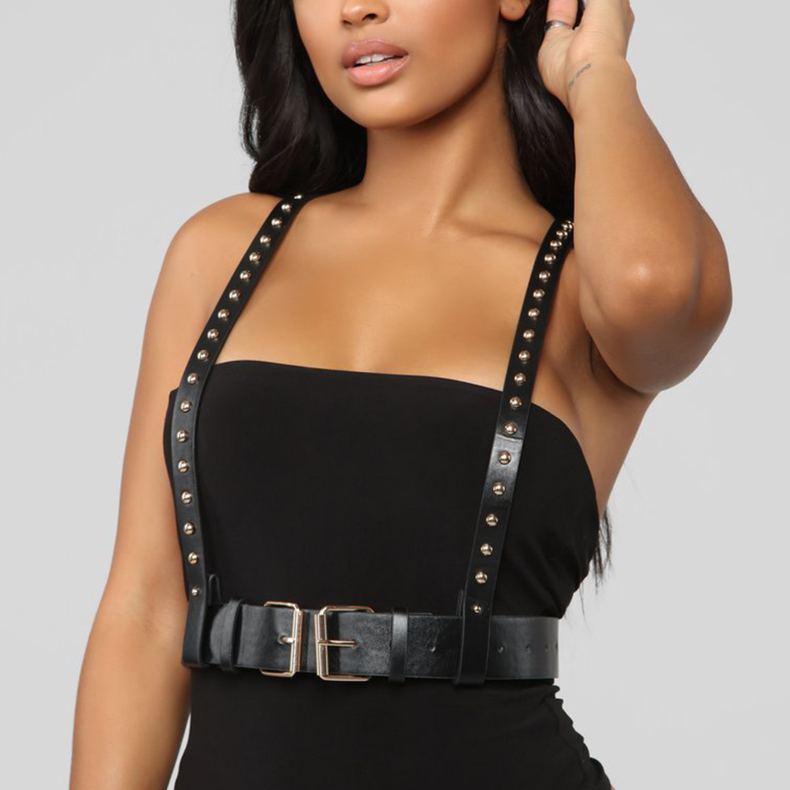

Back
Rad women making rad typography and various other graphic explorations. This item is on preorder for their second run of printing, once I get the shipping confirmation I will let ya know! :)
The Acute is a Medium-Sized toy used for both vaginal and anal play that mimics the perfect angle for penetration. Safe for your body: made from Tantus’ own unique formula of 100% Ultra-Premium Silicone. Easy to clean: Eco-Friendly, Hypoallergenic, Hygienic, Boilable, Bleachable and Dishwasher Safe. Flexible material, glossy finish.
Adjustable size, double buckle. Thought this looked really cute and people online were had success pairing it with everything from turtleneck sweaters to crop-top t-shirts.
This is the "reach" item. I've never seen you wear anything like this, but I have seen you wear blazer tops and I thought this looked like a cross betwen Game of Thrones and Badass Female Designer. Loved how it hangs in the photos, and I think you'd kill in this. There is also a reverse color option where the material is white and the pinstripes are black. Similar to the harness before this, it's an easy piece to pair with a lot of other clothes.